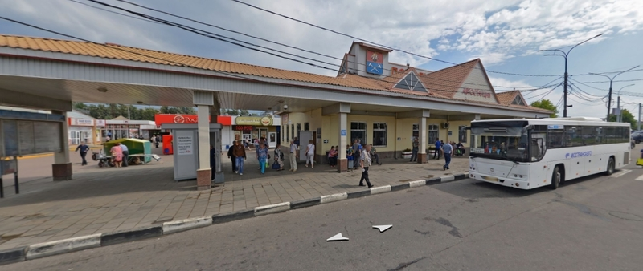

Как и всякий город, Подольск имеет свою историю. В год 75-летия
Победы мы отдаем дань уважения воинам- освободителям. О подвиге
Героев-Летчиков сегодняшние подольчане, к сожалению, мало знают.
Долг живущих на Земле - вечно помнить, знать героев Великой
Отечественной войны
Цели
Увековечить память и ознакомить туристов и жителей города
Подольска с историей жизни и подвигов Героев-летчиков периода
Великой Отечественной Войны;
Приобщение молодежи к историческим и культурным ценностям
народов России; устойчивому развитию; средствам сохранения мира.
Популяризация туристских ресурсов и туристского потенциала
субъектов Российской Федерации;
Содействие интеграции образования, науки, культуры и бизнеса.
Развитие геоинформационых технлогий в туристическом сервисе
Задачи проекта
Сохранить память и повысить уровень знаний у подрастающего
поколения о героях Великой Отечественной войны;
Обмен профессиональным опытом образовательных организаций,
науки, культуры и бизнеса;
Распространение и популяризация научных знаний среди молодежи;
Налаживание и укрепление партнерских отношений в реализации
совместных творческих проектов.
Разработка туристического маршрута в городе Подольск по теме
"История Подольских Лётчиков"
Целевая аудитория
Согласно данным анкетирования были выявлены сегменты потребителей:
Школьники
Взрослые
Семьи с детьми
Молодежь.
Интерактивная карта
Протяженность маршрута: 7,5 км
Продолжительность маршрута: 3 часа 30 минут
Число туристов в группе (рекомендуемое): 15-20 человек
Описание точек маршрута
Первый объект показа
Станция Подольск , вокзальная площадь.Памятник подольскому
рабочему. Архитектурноскульптурная композиция - посвящена трудовой
славе подольчан разных поколений.
Второй объект показа
Революционный проспект,32/34.Здание, где проживал Герой Советского
Союза Савельев Евгений Петрович.Мемориальная доска. Герои с 1951г.
по 2004г.
Третий объект показа
Рабочая улица 7, здание где работал Герой Советского Союза Савельев
Евгений Петрович. Индустриальный техникум(сейчас Институт сервисных
технологий) Герой с 1970г.по 1972г. работал заместителем директора
индустриального техникума: с 1973 г. директором. Подольской
художественной мастерской.
Четвёртый объект показа
проспект Ленина 158.Здание, где проживал Герой Советского Союза
Понамарев Василий Михайлович . Мемориальная доска. Герой с 1974г. по
2001г. проживал по этому адресу
Пятый объект показа
Улица Кирова 4. Администрация города Подольска. Доска почета героев
подольчан. Представлены портреты подольчан - Героев
Социалистического Труда, полных кавалеров ордена Славы и почетных
граждан города Подольска
Шестой объект показа
Большая Серпуховская улица 2/24. Здание где учился Герой Советского
Союза Батырев Петр Михайлович Лицей №1 Родился 1 марта 1918г. в
деревне Чулпаново (Подольский район Московской области). Именем
Батырева Названа улица в Городе Подольск.
Седьмой объект показа
Парковая улица д.41 Здание, где проживал Герой Советского Союза
Чухарев Александр Иванович. Мемориальная доска. Герой с 1989г. по
2007г. проживал по этому адресу.
Восьмой объект показа
Здание, где проживал Герой Советского Союза Кондрашев Александр
Петрович. Мемориальная доска. Родился 25 декабря 192 г. в селе
Андреевское Московской губернии (ныне Подольский район Московской
области) С 1961 г. по 1982 г. проживал Парковая улица д.57
Девятый объект показа
Улица Клемента Готвальда 17. Место где проживал Герой Советского
Союза Краев Николай Терентьевич. Мемориальная доска. Герой с 1970 г.
по 2002 г. проживал на этой улице.
Десятый объект показа
Место где проживал Герой Советского Союза Чистов Борис Петрович .
Мемориальная доска. Родился 14 августа 1921 г. в деревне Молодцы
Подольского района Московской области. С 1965 г. по 1976 г. проживал
на улице Чистова 11/8. В честь Героя назва улица в городе Подольск.
Советы туристам
Что взять в дорогу?
Было бы очень хорошо взять хотя бы одну теплую вещь, оставлять
ее в салоне автобуса, если не пригодится, удобную обувь.
Разложите, пожалуйста, вещи в разные сумки, чтобы в салоне
автобуса остались предметы, которые могут понадобиться во время
переезда (вещи, еда, лекарства, фото-, видеоаппаратура и др.)
Верхняя полка в салоне автобуса предназначена только для
небольших вещей и книг; тяжелые предметы (в т.ч. бутылки)
категорически запрещено класть наверх во избежание несчастных
случаев.
Для Вашего же комфорта и спокойствия, возьмите с собой
лекарства, которые Вы обычно употребляете при простудных,
хронических и иных заболеваниях.
Команда проекта
Научный руководитель проекта: К.э.н. доцент Романишина Татьяна
Сергеевна